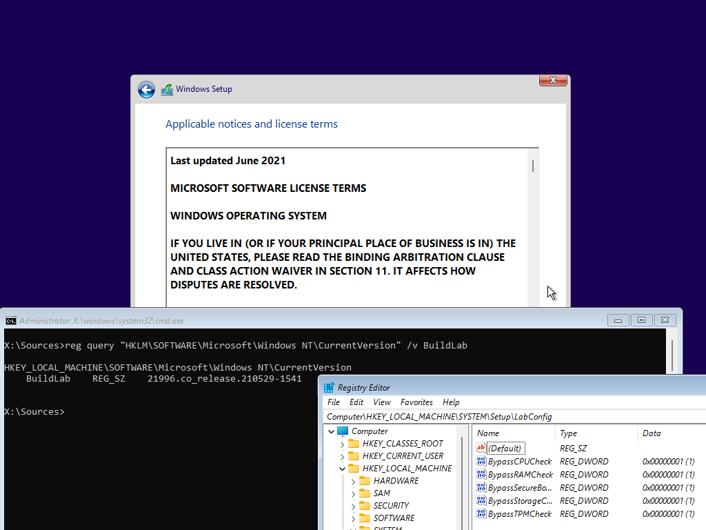
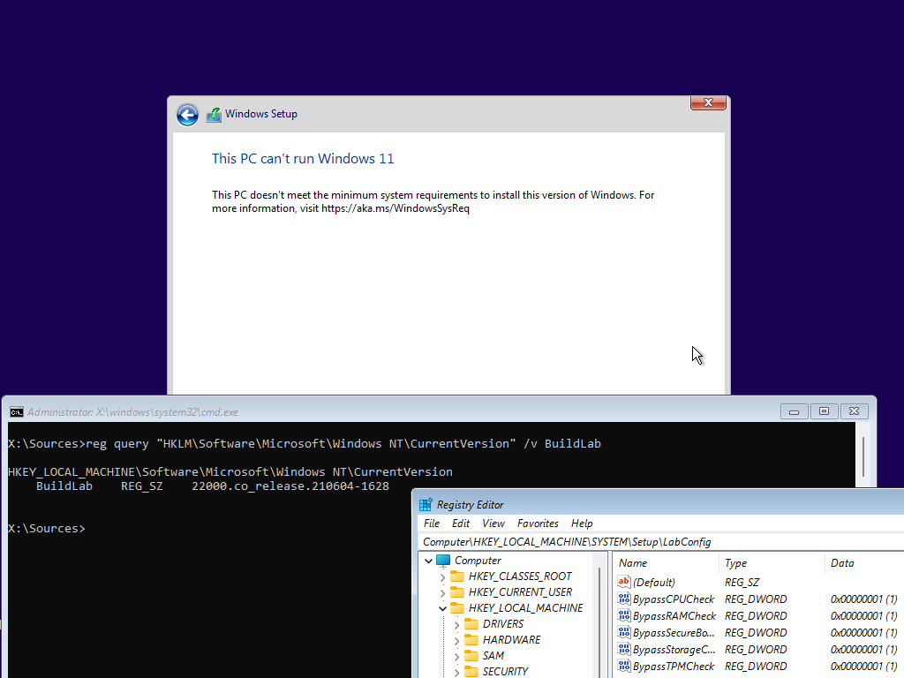
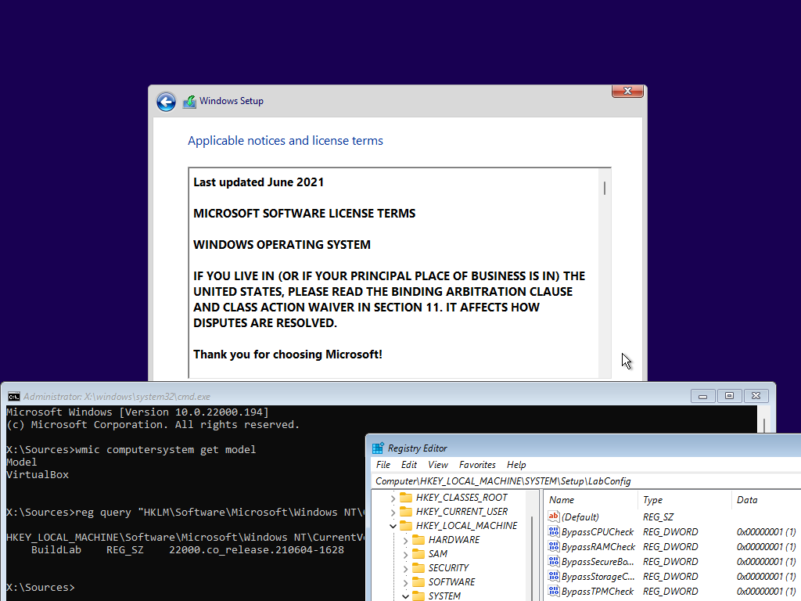

Help Documentation edition: Dec. 1, 2021 (v2.0.0100)
Version 2.0.0100
This software uses 7-Zip. Copyright (C) 2021 Igor Pavlov. This software uses OSCDIMG. Copyright (C) 1993, 2012 Microsoft Corporation. This software uses DISM. Copyright (C) Microsoft Corporation.
Contents:
2.1. Getting the ISO images
2.2. Installer creation
| Version | Changes | Build Date |
| 2.0.0100 | - Refined design - Added installer history, an easier way to view your created installers - Added an ISO file scanner, allowing for easier installer searches - Added a new installer creation method: REGTWEAK Bugfixes: - The UEFI mode confirmation mode no longer shows twice |
TBD |
| 1.0.0136 | - Added a new design that resembles WinUI 3 - Added ability to switch to both designs |
Oct. 31, 2021 |
| 1.0.0135 | - Added ability to set a custom label for the installer - Added ability to use UEFI for platform compatibility - Updated help documentation |
Oct. 14, 2021 |
| Revision 1: - Fixed a bug where OSCDIMG would launch twice |
Oct. 15, 2021 | |
| 1.0.0134 | - Added disclaimer notice - Added build date column to the documentation - Integrated more functionality |
Oct. 2, 2021 |
| Revision 1: - Added Spanish translations |
Oct. 6, 2021 | |
| 1.0.0133 | - Initial version | Sep. 7, 2021 |
| Bugs: - When using REGTWEAK as the installer creation method, and testing the custom installer on VMware, Setup will still block your system. In this case, please use one of the other methods. This is due to Setup still detecting components (if you're using builds 22000.194 or higher; or Nickel builds from 22458 onwards) on a hypervisor. This was tested on the leaked build (21996.1), and in VirtualBox; and this doesn't happen. |
||

Windows 11 custom installer done using REGTWEAK with CMD and REGEDIT open on VMware. Do note that this is the leaked build
Windows 11 custom installer done using REGTWEAK with CMD and REGEDIT open on VMware. Do note that, although the registry entries were added, Setup will still block the VM
Windows 11 custom installer done using REGTWEAK with CMD and REGEDIT open on VirtualBox
Here is a list of things to be added in the future:
- support for "wimlib-imagex" (by default, the program will use the built-in "DISM/IMAGEX" tools in Windows
1. Download the images (Windows 11 and Windows 10 images)
2. Click 'Create a modified WIndows 11 installer'
3. Specify the two Windows images
4. Specify where you want to save the custom image
5. Let the program do the magic
That's it!
- Microsoft, for making me write this tool
- My family and friends
These files are crucial for the installer creation:
- 7z.exe: the main ISO extractor
- 7z.dll: a critical component to 7-Zip
- OSCDIMG: the ISO creator